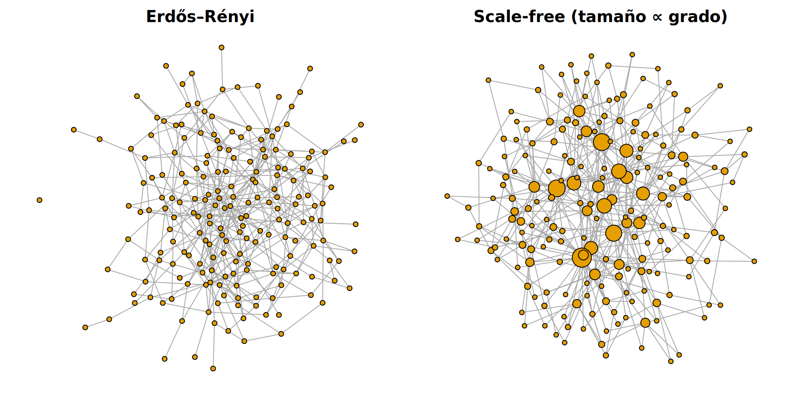
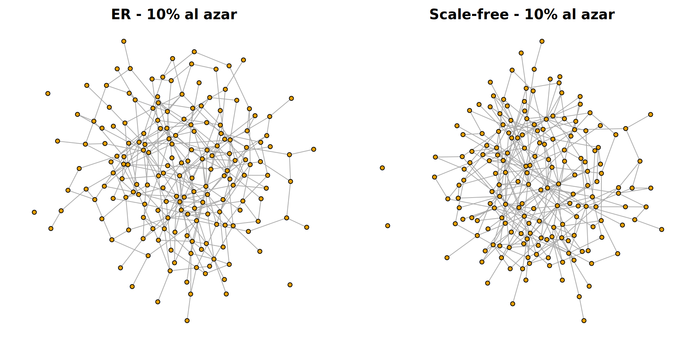
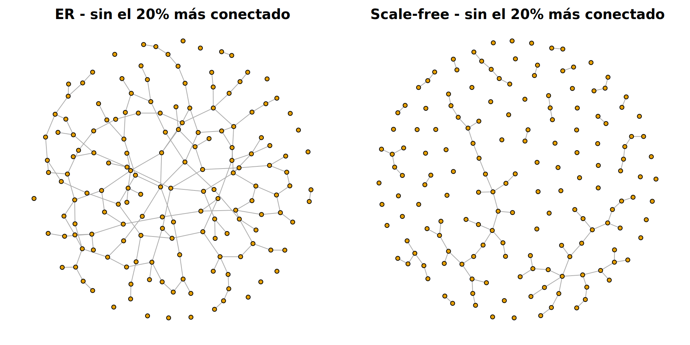

library(igraph)
set.seed(1)
# Función auxiliar: fracción de los nodos ORIGINALES que siguen en la componente más grande
componente_gigante <- function(g, N) max(components(g)$csize) / NSolución — Ejercicio: Robustez de redes ER vs. scale-free
Análisis de grafos y topología de redes (I)
1. Crear las dos redes
N <- 200
g_sf <- sample_pa(N, m = 2, directed = FALSE) # scale-free (Barabási–Albert)
g_er <- sample_gnm(N, m = ecount(g_sf)) # Erdős–Rényi con las mismas aristas
c(aristas_ER = ecount(g_er), aristas_SF = ecount(g_sf))aristas_ER aristas_SF
397 397 c(grado_max_ER = max(degree(g_er)), grado_max_SF = max(degree(g_sf)))grado_max_ER grado_max_SF
12 21 par(mfrow = c(1, 2), mar = c(1, 1, 2, 1))
plot(g_er, vertex.label = NA, vertex.size = 3, main = "Erdős–Rényi")
plot(g_sf, vertex.label = NA, vertex.size = 2 + degree(g_sf) / 2, main = "Scale-free (tamaño ∝ grado)")
Mismo número de nodos y aristas (mismo grado medio, ≈ 4), pero en la red scale-free el grado máximo es mucho mayor (aquí casi el doble, y la diferencia crece con el tamaño de la red): tiene hubs.
2–3. Eliminar un 10 % de nodos al azar
n_elim <- 0.10 * N
er_rand <- delete_vertices(g_er, sample(N, n_elim))
sf_rand <- delete_vertices(g_sf, sample(N, n_elim))
data.frame(
red = c("ER", "Scale-free"),
conexa_antes = c(is_connected(g_er), is_connected(g_sf)),
conexa_despues = c(is_connected(er_rand), is_connected(sf_rand)),
comp_gigante = round(c(componente_gigante(er_rand, N), componente_gigante(sf_rand, N)), 2)
) red conexa_antes conexa_despues comp_gigante
1 ER FALSE FALSE 0.88
2 Scale-free TRUE FALSE 0.89par(mfrow = c(1, 2), mar = c(1, 1, 2, 1))
plot(er_rand, vertex.label = NA, vertex.size = 3, main = "ER - 10% al azar")
plot(sf_rand, vertex.label = NA, vertex.size = 3, main = "Scale-free - 10% al azar")
Tras eliminar un 10 % de nodos al azar, ambas redes aguantan bien: la componente gigante conserva alrededor del 90 % de los nodos, y la scale-free suele quedar ligeramente por encima. Ninguna se rompe, aunque sí aparecen algunos nodos sueltos. (Nota: con un grado medio de 4, la red ER a menudo ya no es conexa antes de eliminar nada, porque tiene algún nodo aislado. La scale-free, por construcción, siempre es conexa.)
¿Por qué aguanta la scale-free? La gran mayoría de sus nodos tienen grado 2–3. Al elegir al azar, casi nunca tocamos un hub, y los hubs mantienen la red unida.
4. ¿Y si eliminamos los hubs?
n_elim <- 0.20 * N
hubs_er <- order(degree(g_er), decreasing = TRUE)[1:n_elim]
hubs_sf <- order(degree(g_sf), decreasing = TRUE)[1:n_elim]
er_hubs <- delete_vertices(g_er, hubs_er)
sf_hubs <- delete_vertices(g_sf, hubs_sf)
round(c(ER = componente_gigante(er_hubs, N), Scale_free = componente_gigante(sf_hubs, N)), 2) ER Scale_free
0.70 0.16 par(mfrow = c(1, 2), mar = c(1, 1, 2, 1))
plot(er_hubs, vertex.label = NA, vertex.size = 3, main = "ER - sin el 20% más conectado")
plot(sf_hubs, vertex.label = NA, vertex.size = 3, main = "Scale-free - sin el 20% más conectado")
Ahora el resultado se invierte. La red ER conserva una componente gigante con ~70 % de los nodos, mientras que la scale-free se fragmenta en muchos trozos pequeños (componente gigante ~10–15 %).
Conclusión (lo que deberían contestar los alumnos)
- Frente a fallos aleatorios (mutaciones), la red scale-free es robusta: los fallos casi siempre afectan a proteínas poco conectadas. Con este tamaño de red y un 10 % de fallos, la diferencia con ER es pequeña. El mensaje es que la scale-free no es más frágil a pesar de depender de unos pocos hubs.
- Frente a ataques dirigidos a los hubs, la red scale-free es mucho más frágil que la ER, porque unos pocos nodos concentran gran parte de las conexiones. En la ER ningún nodo es mucho más importante que otro, así que “atacar a los más conectados” no es muy distinto de atacar al azar.
- Relevancia biológica: muchas redes PPI tienen distribuciones de grado de cola larga. Esto explica en parte por qué los organismos toleran muchas mutaciones, y también por qué las proteínas hub tienden a ser esenciales (regla centralidad-letalidad, Jeong et al., 2001). También sugiere que los hubs son buenas dianas terapéuticas, por ejemplo para antibióticos, siempre que no tengan homólogos en humanos.